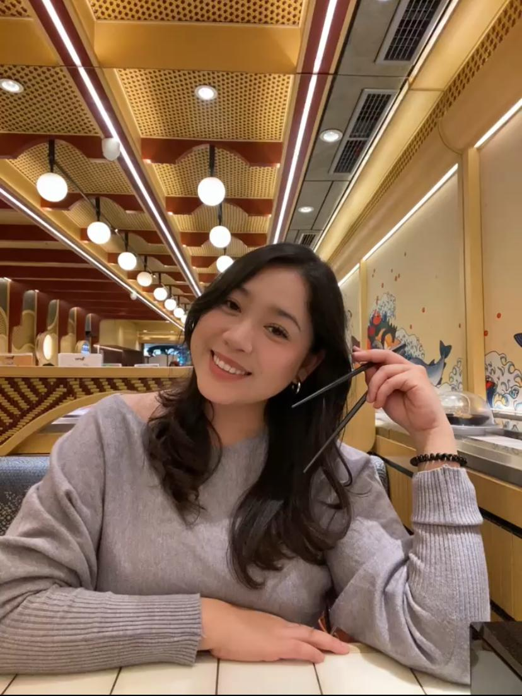
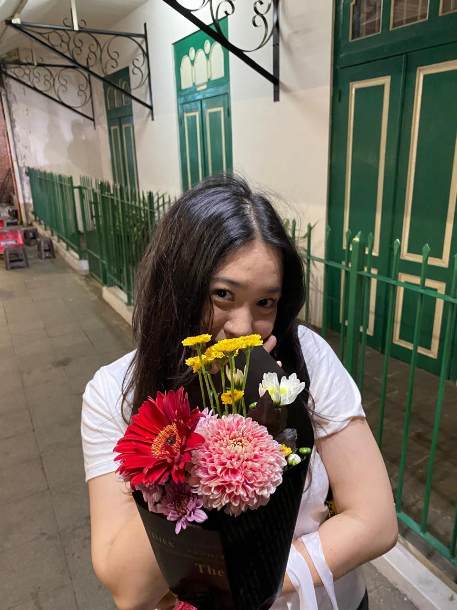
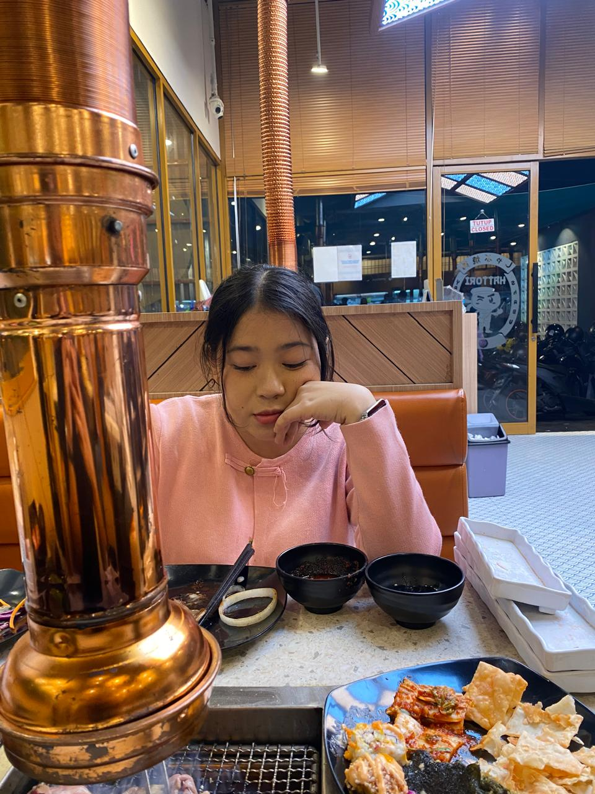
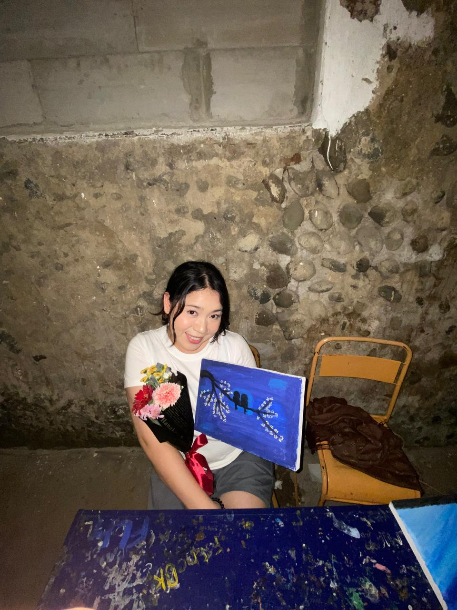
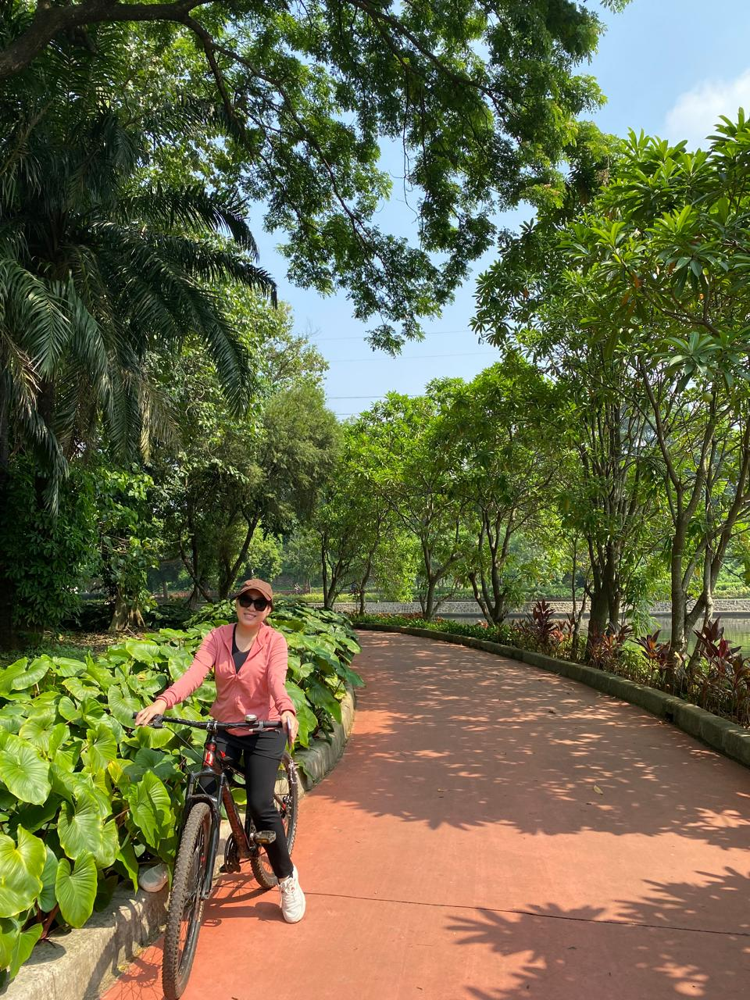

Hai Enji,
Selamat ulang tahun ya 🎂
Di hari ini, semoga kamu ga cuma nambah umur, tapi juga nambah kuat dalam menghadapi hal-hal yang ga selalu mudah.
Aku harap, di antara semua hal yang kamu jalanin, kamu tetap bisa nemuin alasan kecil untuk tersenyum… walaupun pelan.
Kalo lagi capek, gapapa berhenti sebentar. ga semua harus diselesaikan hari ini. Kadang, bertahan sejauh ini aja udah lebih dari cukup.
Semoga semua yang kamu perjuangkan, yang mungkin ga banyak orang liat, pelan-pelan berubah jadi sesuatu yang indah di waktu yang tepat.
Dan semoga ke depannya, kamu selalu dipertemukan dengan hal-hal yang baik yang ga cuma datang, tapi juga memilih untuk tetap tinggal.
Ada hal-hal yang mungkin ga lagi sama seperti dulu, tapi bukan berarti semuanya benar-benar hilang.
Kadang, yang berubah cuma keadaan, bukan rasa yang pernah ada di dalamnya.
Jaga diri baik-baik ya, karena kamu lebih berharga dari yang kamu kira.
— Nart


